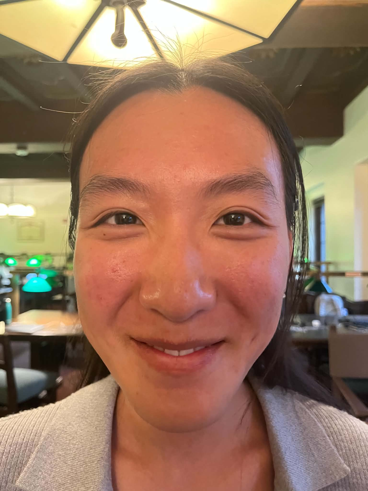
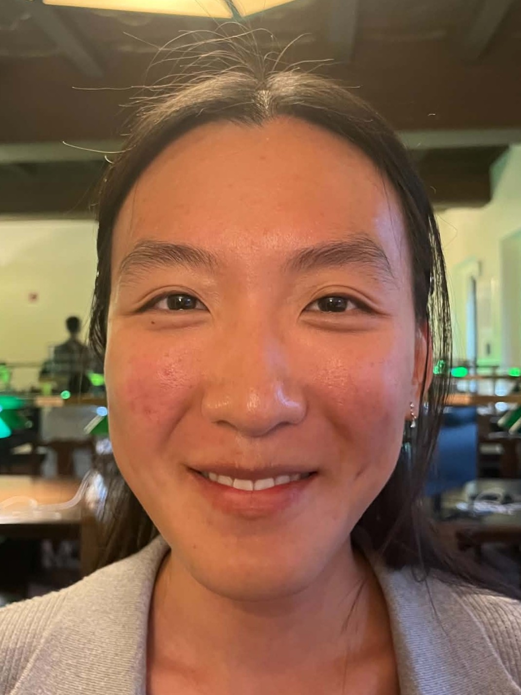
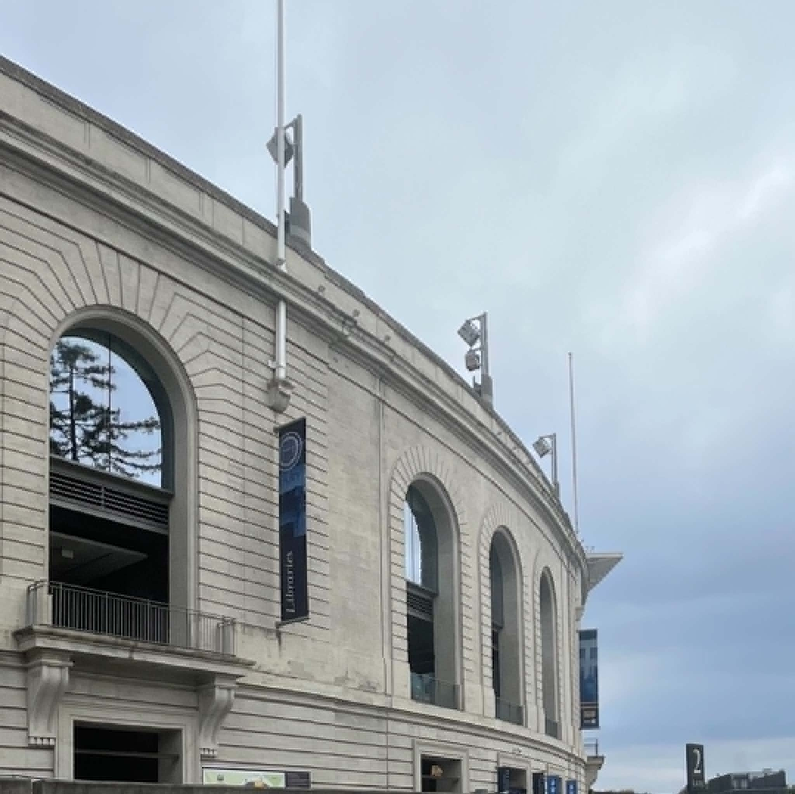

CS180 · Project 0
Project 0
My first project in CS180 — exploring how camera distance and focal length shape a photograph.
Part 1Selfie: The Wrong Way vs. The Right Way
Comparing selfies shot at different distances to see how a close camera exaggerates facial features.


Part 2Architectural Perspective Compression
Photographing the same structure from near and far to show how distance flattens perspective.

Part 3The Dolly Zoom
A simple GIF that demonstrates the dolly zoom effect — moving the camera while zooming to keep the subject a constant size.